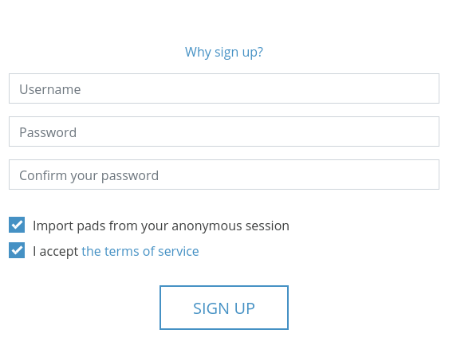

User Account¶
CryptPad encrypts data so that it is readable only by you and your collaborators. For this reason the administrators of the service cannot view, retrieve or reset your password. Therefore it is important that you make a note of your password in a safe place separate from your CryptPad account.
CryptPad uses the combination of your username and password to identify you. Usernames are not unique on CryptPad. It is possible to create multiple accounts with the same username and different passwords.
Account types¶
There are three types of accounts on CryptPad:
Guest user¶
Non-registered users are identified by an emoji animal or mascot avatar (at the top right).
No personal information is necessary to use CryptPad without registering. However, functionality is reduced:
Access to all applications.
Sharing and collaborating on documents.
Storage limited to 3 months of inactivity (counted per document).
File storage unavailable for images/videos/PDF/etc…
Logged in user¶
Logged in user are identified by an avatar (at the top right), either their profile picture if they have set one or the first 2 letters of their display name.
Registering an account does not require any personal information, only a username and password. Additional functionality for logged in users:
Personal and permanent storage space for documents.
File storage for images/videos/PDF/etc…
More options to manage documents as owner: add a password, an expiry date, or an access list.
Organisation of documents in folders, shared folders, or with tags and templates.
Creation of teams.
Customisation of the profile page and a list of contacts to share documents and chat with. Notifications for interactions between contacts.
Account management¶
Registration¶
To register a new account, go to the registration page: Register at the top right of the home page.
Fill out the following information:
Username: This is the name used to log in to CryptPad, it is different from the Display name visible by other users. The Username cannot be changed once the account is created.
Note
Unlike many online services, CryptPad does not require an email address to register. It is possible to use an email address as a username but it is then used as any other string of characters. As explained below, this username is not visible from the administrators and is never used to communicate about your account (especially not to send "password reset" emails, as these do not exist on CryptPad).
Password: It is recommended to use a strong password. The password can be changed in user settings.

Danger
Important: CryptPad administrators cannot view, retrieve or reset your password if it is lost or forgotten.
Terms of service: Read and accept the terms of service.
Optional:
Import pads from your anonymous session: If you have created documents as a non-registered user you can import them into your account.
Logging in¶
To log in to CryptPad visit the log in page (at the top right of the home page), and fill in the username and password used at registration.
Optional:
Import pads from your anonymous session: If you have created documents as a non-registered user you can import them into your account.
Settings¶
The account settings are found in the user menu (avatar at the top right) > Settings.
Account¶
Account name: Username chosen at registration. This name cannot be changed. Logged in users
Public Signing Key: Used by instance administrators and/or on instances that offer subscriptions. This is the only data about your account that is available to the administrators of the service. Logged in users
Display Name: Name displayed to other users, for example when you collaborate on documents. To change this name enter a new name and click on Save. Logged in users
Language: Language used in the CryptPad interface. To change the language of CryptPad pick a new language in the drop-down menu. CryptPad is translated in English and French by the development team, and in other languages by the community. Some translations can be incomplete and/or contain errors.
Automatic Download limit: Maximum size in megabytes (MB) for automatically loading media elements (images, videos, pdf) embedded into documents. Elements bigger than the specified size can be loaded manually. Use "-1" to always load the media elements automatically.
Change your password: Enter your current password and confirm the new password by typing it twice. Logged in users
Account deletion: Option to permanently delete your account and all of its documents. Delete your account and confirm. Logged in users
Confidentiality¶
Close remote sessions: Log out of all sessions except the one from which this option is activated. (see also Remote Disconnect) Logged in users
Pad storage in CryptDrive: Manages if documents you visit are automatically stored in your CryptDrive. If no one owns a document you add to your CryptDrive, it counts against your storage quota.
Automatic: All the pads you visit are stored in your CryptDrive.
Manual (always ask): If you have not stored a pad yet, you will be asked if you want to store them in your CryptDrive.
Manual (never ask) Pads are not stored automatically in your Cryptpad. The option to store them will be hidden.
Safe links: When this setting is active, the link in your browser’s address bar does not provide access to the document unless the recipient already has it in their CryptDrive. This setting is active by default. It is highly recommended to keep it active and to use the Share menu to copy links to documents.
CryptPad includes the keys to decrypt your documents in their links. Anyone with access to your browsing history can potentially read your data. This includes intrusive browser extensions and browsers that sync your history across devices. Situations where your browser is visible by others, such as screen-sharing or screenshots, are also potentially risky in terms of leaking access to your documents. Enabling “safe links” prevents the keys from entering your browsing history or being displayed in your address bar whenever possible.
Feedback: CryptPad can send anonymised usage feedback to the server in order to improve the user experience. The content of documents is never shared. This option is disabled by default.
Appearance¶
Color theme: determines the theme (light or dark) used across CryptPad. By default this follows the operating system and/or browser setting, but it can also be set manually.
CryptDrive¶
Tips: Help messages in the CryptPad interface. Click on Reset to display them again if they have been dismissed.
Duplicated owned pads: When you move your owned pads to a shared folder, a copy is kept in your CryptDrive to ensure that you retain your control over it. You can hide duplicated files. Only the shared version will be visible, unless deleted, in which case the original will be displayed in its previous location.
Thumbnails: To help navigating the CryptDrive in grid mode, CryptPad can create thumbnails of documents and store them in the browser. This option is turned off by default because it can slow down the browser on less powerful computers. The Clean button deletes all existing thumbnails.
Backup: Two types of backups are available.
Backup only saves the keys of documents in the CryptDrive, not their content. This option is designed to save access to documents and Restore it in another session.
Download my CryptDrive saves the content of all documents in the CryptDrive. When possible, this is done in a format that is readable by other software. Some applications produce files that are only readable by CryptPad.
Import: If pads have been created as a non-registered user prior to logging in, they can be imported to the CryptDrive. Logged in users
Delete History: The history of the CryptDrive and notifications can be deleted to save storage space. This does not affect the history of documents, which can be deleted individually in the properties dialog.
Cursor¶
Cursor color: Change the color of your cursor. This is used to identify you while collaborating on documents. It also determines the color of your text when color by author is active in Code documents.
Share my cursor position: Display or hide the exact position of your cursor to other users.
Display other users’ cursor position (BETA): Display or hide the position of other users’ cursors.
Rich Text¶
User settings for the Rich Text application.
Editor’s maximum width: Switch between page mode (default) that limits the width of the text editor, and using the full width of the screen.
Spellcheck: Enable spellcheck in Rich Text documents. Spelling errors are underlined and suggested corrections are available through
Ctrl + Right clickon the word to correct.Comment notifications: Disable notifications when another user replies to one of your comments.
Code¶
User settings for the Code / Markdown application.
Code editor indentation (spaces): Choose the number of spaces for each level of indentation.
Indent using tabs (instead of spaces): Insert tabs rather than spaces with the
Tabkey.Auto-close brackets: Automatically insert a closing character
)when brackets are opened with((also works with[,',").Font size in the code editor: Set the size of text in the code editor.
Spellcheck: Underline spelling mistakes in the code editor, correction suggestions are available through
Right clickon the word to correct.
Subscription¶
(only on cryptpad.fr)
Redirects to the account page.
Support¶
Support tickets provide a secure communication channel with the administrators of the CryptPad instance. The Support page is accessible through:
User menu (avatar at the top-right) > Support.
Existing tickets: Follow up on conversations with the support team.
Reply to a ticket.
Close it if the issue has been resolved.
Delete closed tickets.
New ticket: To send a new ticket Fill in the form with a title, category, and the details of the problem or question. Add an attachment if needed, for example a screenshot, and click on Send.
Notifications¶
Logged in users
CryptPad notifies you when your contacts interact with you. Notifications are displayed by the bell next to the avatar (at the top-right). If you have unread notifications, the bell is filled and a count is displayed.
Bell drop down menu:
Browse unread notifications.
Delete a notification with .
Open notifications panel: View all notifications and notification history.
On the notifications panel page:
Select the type of notification to view:
All.
Contact Requests.
Shared with me.
History.
: Delete notifications.